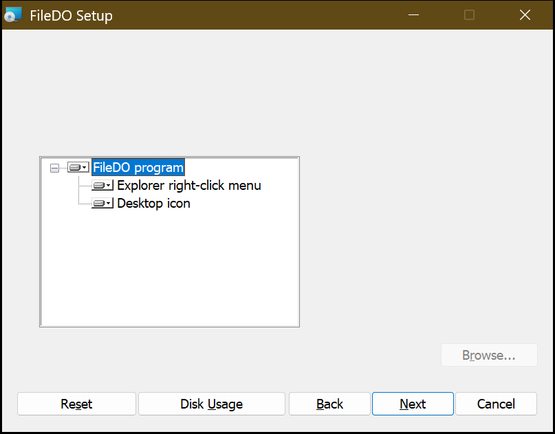

Installez FileDO comme un programme Windows - et décidez ce qu’il ajoute à votre système.
FileDO est avant tout un outil en ligne de commande, mais il s’installe comme un programme ordinaire : une fenêtre, des raccourcis, le type de document .fd-sec et des entrées dans le menu contextuel de l’Explorateur. Rien de tout cela n’apparaît en silence - le programme d’installation demande, et la version portable n’enregistre rien du tout tant que vous ne le demandez pas.
Choisir comment installer
Programme d’installation (setup EXE)
L’option complète : les fichiers dans Program Files, filedo dans le PATH, des raccourcis et - si vous la laissez cochée - l’intégration à l’Explorateur. La désinstallation reprend tout.
Rapide, et aucun programme d’installation ne s’exécute. Les commandes fonctionnent aussitôt ; les entrées de l’Explorateur relèvent d’une commande distincte - voir plus bas.
winget install SerZhyAle.FileDO
Microsoft Store
La tuile FileDO et la commande filedo dans n’importe quel terminal. Cette version n’a pas encore d’entrées dans l’Explorateur : un paquet ne peut les obtenir que par un gestionnaire shell signé, ce qui est un travail distinct.
Premier lancement : ce que Windows va dire
Prenez FileDO-<version>-setup.exe dans la dernière release. Un fichier .sha256 se trouve à côté.
Vérifiez le hachage : la ligne qu’affiche la commande ci-dessous doit correspondre au contenu du fichier .sha256. C’est ainsi que vous savez que le fichier est bien celui qui a été publié.
Lancez le fichier. Le programme d’installation n’est pas signé numériquement, donc Windows peut afficher « Windows a protégé votre ordinateur ». Cela signifie seulement que le système ne connaît pas l’éditeur d’un nouveau fichier non signé - ce n’est pas un constat sur le contenu. Choisissez « Informations complémentaires », puis « Exécuter quand même ». Pourquoi, et ce que l’application ne fait jamais.
Windows demande ensuite l’autorisation de l’administrateur : les programmes vont dans C:\Program Files\FileDO et les entrées de l’Explorateur sont écrites dans le registre de la machine.
Pour mettre à jour, lancez le setup EXE plus récent : il remplace la copie installée au lieu d’en ajouter une seconde.
Ce que fait le programme d’installation
La page « Choose what to install » propose quatre fonctionnalités. La première est obligatoire ; vous pouvez décocher les trois autres maintenant, ou les modifier plus tard avec Modifier dans « Applications et fonctionnalités ».
FileDO program - les programmes dans C:\Program Files\FileDO, filedo dans le PATH système et deux entrées du menu Démarrer : FileDO, et FileDO Disk Manager, qui ouvre directement le Gestionnaire de disques.
Explorer right-click menu - le groupe File DO.. dans le menu de chaque fichier, et le type de document .fd-sec avec sa propre icône.
Disk container files (.fdd) - le type de fichier .fdd des disques virtuels avec sa propre icône : un double-clic ouvre la fenêtre FileDO et monte le conteneur, et le menu contextuel ajoute Mount read-only et Unmount. Disques virtuels.
Desktop icon - une icône sur le bureau qui ouvre la même fenêtre que l’entrée FileDO du menu Démarrer.

Le programme d’installation est en anglais quelle que soit la langue de Windows, donc une seule image suffit.
Pour un déploiement sans surveillance, les fonctionnalités se choisissent par leur nom :
/quiet installe tout sans rien demander, /uninstall reprend tout. Le .msi nu est publié à côté - c’est exactement le fichier que contient le setup EXE - et c’est celui à utiliser quand un outil de déploiement veut les noms des fonctionnalités.
Contenu du groupe « File DO.. »
Faites un clic droit sur un fichier, File DO.., et un sous-menu de dix entrées s’ouvre. Chacune ouvre une fenêtre de console, pose les questions nécessaires et reste à l’écran jusqu’à ce que vous appuyiez sur Entrée.
Emballer
Secure place le fichier dans un conteneur .fd-sec à côté de lui et conserve l’original. Secure and delete original supprime ensuite l’original - une suppression ordinaire, et l’entrée de menu que vous avez choisie vaut confirmation, donc rien n’est demandé deux fois. Secure and wipe original l’écrase sur place, et celle-ci demande encore de taper WIPE : aucun outil de récupération ne le ramène. Secure with a random name donne au conteneur un nom aléatoire sans extension. L’original n’est touché qu’une fois le conteneur vérifié bloc par bloc.
Déballer
Unsecure ressort définitivement l’original d’un conteneur, horodatages compris. Unsecure and delete container fait de même et supprime le conteneur. Unsecure and start ouvre le fichier restauré avec son programme habituel sans laisser de copie extraite à côté du conteneur : elle va dans %LOCALAPPDATA%\FileDO\reveal, que seuls vous et le système pouvez lire, et est supprimée quand vous fermez la console ; un double-clic sur un .fd-sec est exactement cette commande, le mot de passe étant demandé dans la console qu’elle ouvre. Pour un simple coup d’œil sans rien conserver ensuite, il existe une commande distincte, reveal - saisie à la main. En savoir plus sur les conteneurs.
Et sans aucun conteneur
Wipe this file écrase le fichier sur place puis le supprime ; la console vous demande de taper WIPE et dit sans détour ce que vaut un écrasement sur un SSD. Check this file lit le fichier et indique s’il se lit sans erreur. Info affiche la taille, les attributs, le type et les dates.
Les entrées de l’Explorateur sans programme d’installation
winget, l’archive zip portable et go install ne lancent aucun programme d’installation et n’enregistrent rien. Demandez vous-même les entrées, et reprenez-les de la même façon :
filedo fdsec register
filedo fdsec register -all-users
filedo fdsec unregister
Pour vous, ou pour la machine
Sans option, les entrées ne concernent que vous et n’exigent aucun administrateur. -all-users les écrit pour toute la machine et exige une console élevée.
Seul ce qui a été écrit est retiré
FileDO marque ses propres entrées et ne touche à rien d’autre. Si .fd-sec appartenait auparavant à un autre programme, il lui est rendu.
Bon à savoir
Windows 11
Sous Windows 11, les entrées de FileDO se trouvent sous « Afficher d’autres options » - c’est là que le système place toute entrée de menu classique, et non le signe d’une installation incomplète.
Double-clic
Un double-clic sur un .fd-sec équivaut exactement à l’entrée de menu « Unsecure and start » : une fenêtre de console s’ouvre, demande le mot de passe, restaure l’original sous son vrai nom dans %LOCALAPPDATA%\FileDO\reveal - un dossier que seuls vous et le système pouvez lire - et l’ouvre aussitôt dans le programme auquel appartient sa véritable extension : un .txt empaqueté s’ouvre dans votre éditeur de texte, une vidéo dans votre lecteur. La copie est supprimée quand vous fermez cette fenêtre de console ; si le programme a encore le fichier ouvert, le démarrage suivant de FileDO la supprime. Le conteneur reste en place. Si vous voulez que le fichier reste, utilisez Unsecure sans démarrage - il remet définitivement l’original à côté du conteneur. Il n’y a pas d’entrée de menu distincte pour le double-clic et il n’en faut pas - c’est l’association propre à l’extension qui s’exécute. Un exécutable ou un script restauré ainsi s’ouvre exactement comme lors d’un double-clic ordinaire dessus - aucun refus supplémentaire sur ce chemin.
Partage de disque via SFTP avec Fast Media Sorter & Sharing : enregistrement dans le Gestionnaire de disques, installation, mots de passe et reprise après une étape échouée.Instructions